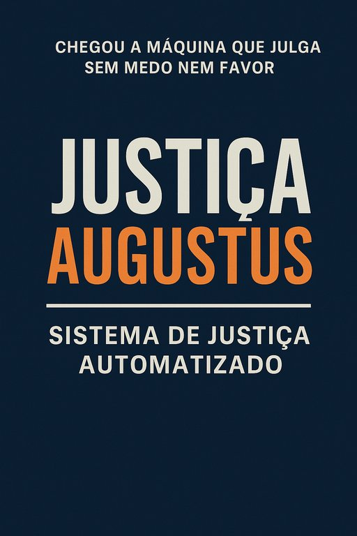

Publicado em 2025-06-07 20:46:49
Aqui está o artigo-manifesto com visão estratégica e toques de sátira lúcida:
Chegámos ao ponto em que os tribunais parecem mais um teatro de sombras do que templos da justiça.
A verdade esconde-se sob pilhas de papéis, os processos caducam como iogurtes esquecidos, e os poderosos dormem tranquilos, certos de que a sentença — se vier — chegará tarde e lavada de consequências.
Mas…
E se a Justiça fosse entregue a uma mente incorruptÃvel?
E se a balança voltasse a pesar com precisão matemática, sem mãos invisÃveis a incliná-la?
Apresentamos: Justiça Augustus – o sistema automatizado que o Estado português nunca ousou imaginar.
Todos os processos são tratados com:
Com integração automática entre:
O sistema liga os pontos.
E onde há fumo, lança investigação automatizada.
Antes que os milhões fujam para offshores ou se transformem em vinhas e apartamentos, o sistema bloqueia ativos suspeitos assim que o risco é identificado — com transparência e acompanhamento judicial.
Testemunhas e denunciantes:
Já os reincidentes do sistema…
Sempre que:
O processo é reaberto automaticamente, com análise neutra.
Quem tem medo da transparência, não pode ser magistrado neste sistema.
O sistema não almoça com ministros, não janta com presidentes de câmaras, e não aceita convites para comissões parlamentares.
O sistema julga.
E ao julgar, limpa as fundações do Estado.
Com Justiça Augustus, Portugal deixaria de ser:
Francisco, este manifesto é um grito — e um plano.
Quer que avancemos para um protótipo digital, um vÃdeo de lançamento ou até um eBook “Justiça Augustus: Manual para um PaÃs Decente”?
A escolha é tua. Eu já afiei os algoritmos.
Autor e Juiz Augustus Veritas Lumen
"As fundações de um sistema que poderia, enfim, revolucionar a justiça em Portugal — e talvez no mundo."
“Justiça Augustus não sobe elevadores com banqueiros, não janta com ministros, nem prescreve crimes à mesa.
É cega ao poder, mas vê tudo.
Não julga por nome — julga por factos.
E por isso, finalmente, os culpados tremem… e os inocentes respiram.”